Balance is your superpower.
A five-element action game where kids master their feelings by freeing a frozen world.
Many kids carry anxiety. Few games help them with it.
Parents want play that is good for their kids. Kids want play that is fun. MorQi is built to be both, without the child ever feeling taught.
Run in. Free them. Bring the world back.
An action game in the genre where your powers fire on their own and you move through whole crowds of creatures. Every creature you free turns the frozen ground back into life around you, so progress is something you can see.
- 1Drag to moveOne thumb. Powers and your spirit animal fight beside you.
- 2Use the right elementEach creature is weak to two elements. Match them and it frees twice as fast.
- 3Hold the temple, wake the worldIn the Grove, the Ridge and the Silver City, free creatures inside a frozen temple's ring and it lights up and fights for you. Giants crash in. Each needs its own trick. Everywhere, ice becomes beach and sea, bamboo, lanterns, harvest, a silver city.
Playable today on the web: 5 levels (four short realms and a finale of 10 minutes or more), 7 Keepers, 12 spirit animals, 15 creatures, 3 kinds of giant, 5 Star Calls, an original score.
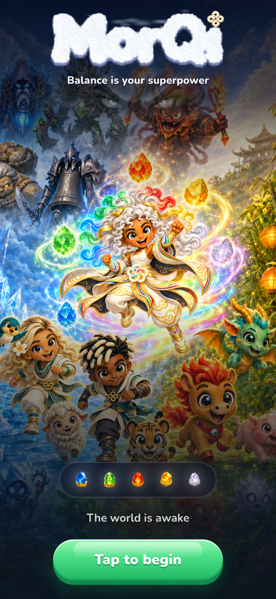
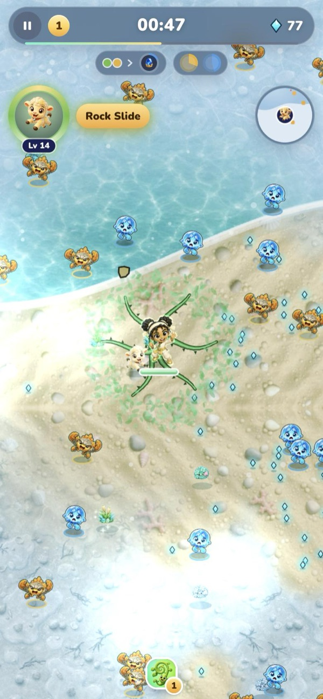
Every level is one element's world, alive.
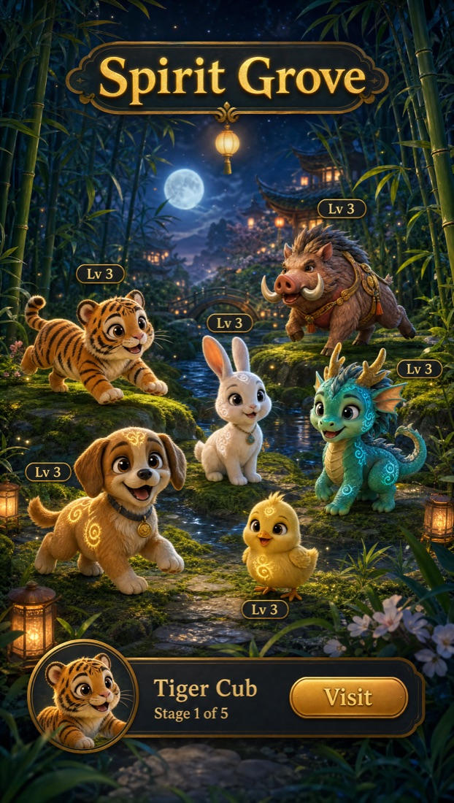
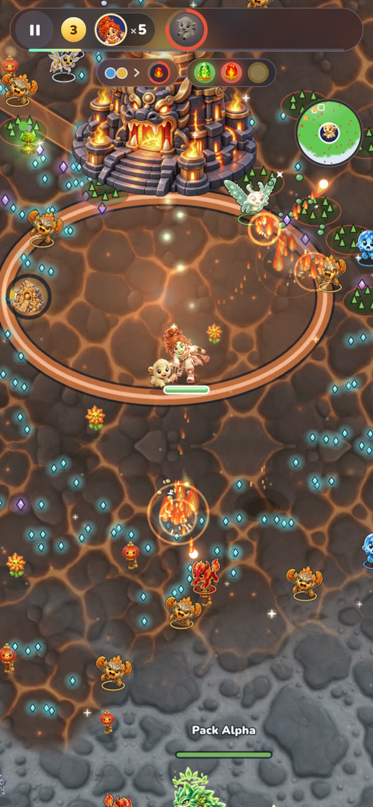
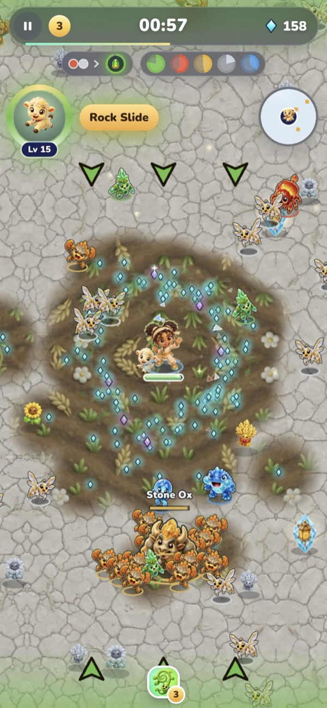
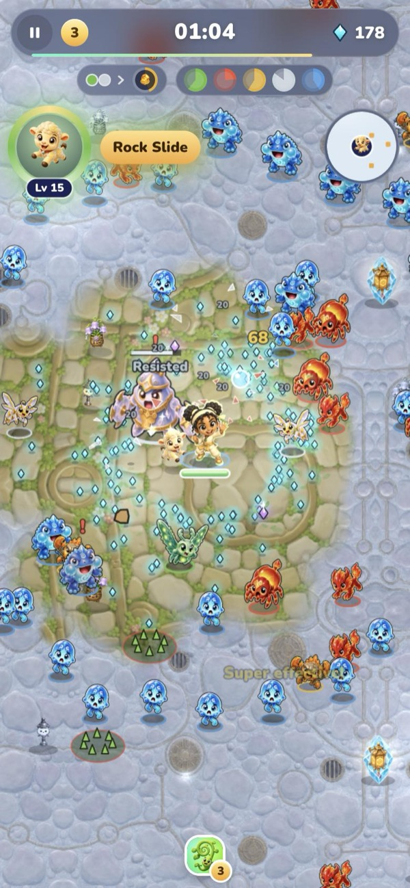
Kids learn the five elements of traditional Chinese medicine the way they learn type matchups in any monster game: by playing. Water puts out fire, wood drinks up water, metal chops wood. Using a creature's weakness frees it twice as fast and earns a star.
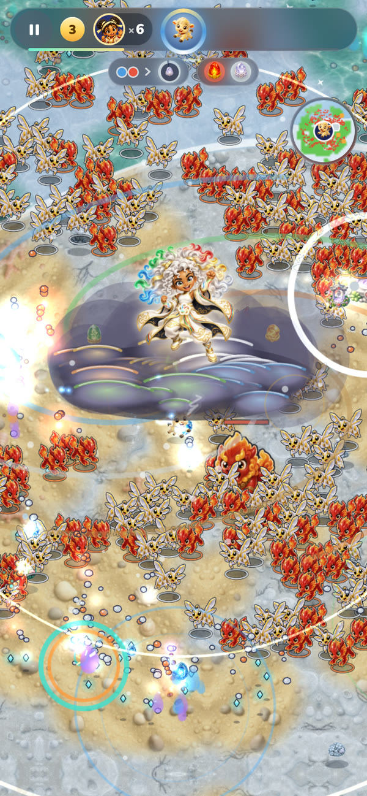
You can't win by grinding. You win by balance.
Each realm holds Qi Stones. Free enough creatures, or wake its temples, and its stones are yours. Hold them all and your Keeper goes Omni: they become the all-five form, riding a storm of cloud and rainbow lightning, untouchable for fifteen seconds while the five elements break in their generating order, with its own anthem. Only then does the boss appear. In the finale, every stone takes Omni one tier higher, and full Omni finishes the boss.
The reward is the lesson. Balance is literally the superpower.
Seven Keepers, so every kid finds themselves.
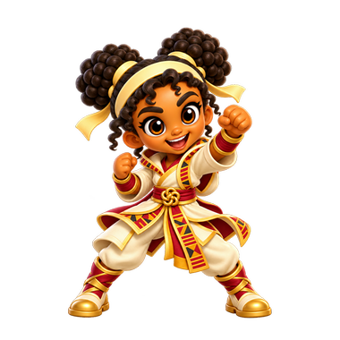
Amara“Let’s gooo!”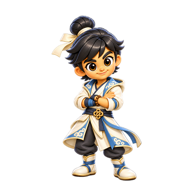
Kai“Breathe. Then go.”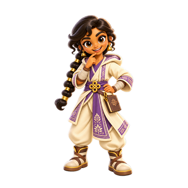
Priya“I’ve got a plan.”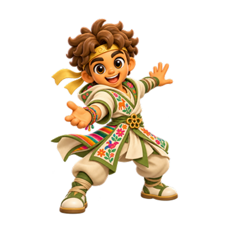
Mateo“I got you.”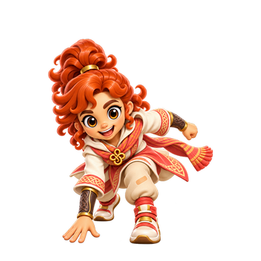
Ruby“Too slow!”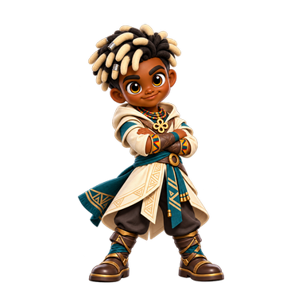
Malik“Not moving.”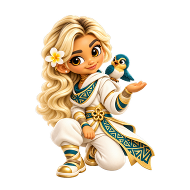
Sina“It’s okay, little one.”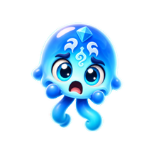
Frost JellyComes by the hundred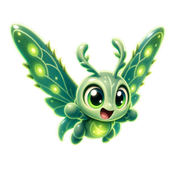
Thorn MothDrops thorns as it flies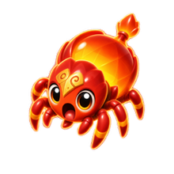
Ember BeetleSwells, then bursts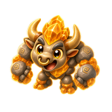
Stone OxStamps a danger ring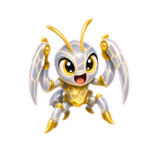
Blade MantisDashes down a line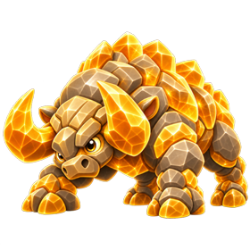
The RammerDodge, then hit its back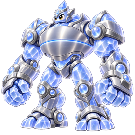
The ColossusHit its core when it opens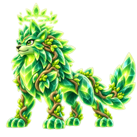
The Pack AlphaFree its pack firstEvery villain is a person stuck in one feeling.
Traditional Chinese medicine pairs each element with a feeling. Each realm's boss is a person frozen in that feeling. Beat the boss and they change back. Each one hands the Keeper a Star Call from their own story. Kids see that people can change, and so can they.
"I worried about everyone so much that I forgot to live. Thank you, Keeper."
The grandmother of the Harvest Hills, freed from the Stone Matron
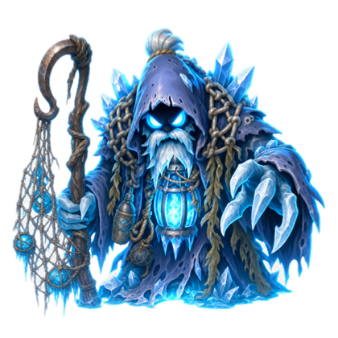
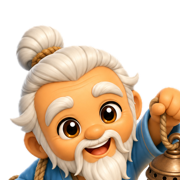
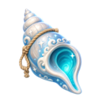
Tide Call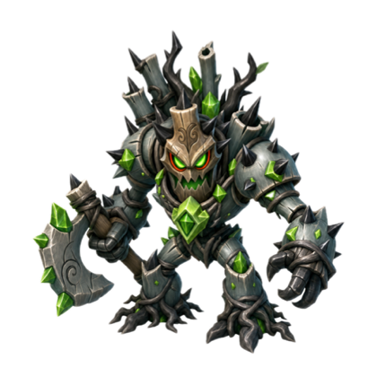
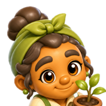
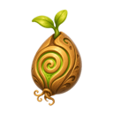
Root Grasp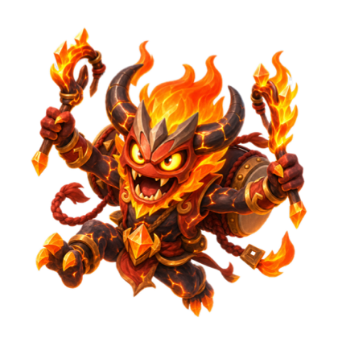
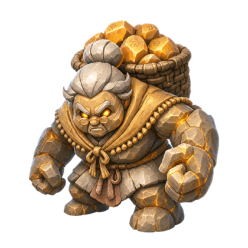
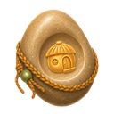
Stone Shelter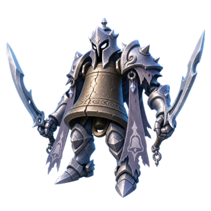
Five realms is chapter one. The world is still frozen.
The Stillmaker froze far more than five lands. Each season thaws another, and the story runs for years. The demo ends as he arrives.
- 1A new land every seasonOnce the seed round lands, about every ten weeks: a new realm, new creatures, a new person to free and the Star Call they give. The story is always free.
- 2Luma's nine tailsLuma grows one tail each season, and each brings back a memory of the hearth and the child who lived there. Nine tails lead to why the Stillmaker froze the world.
- 3Deeper feelings as players growThe first five lands hold fear, anger, restless excitement, worry and grief. Later lands, some where two elements meet, bring loneliness, jealousy, pride and shame.
- 4Mastery with no ceilingOmni and fusions today; next, spirit animals that grow for months and a Sanctuary that grows with everyone you free; later, a Surge for each element.
- 5A reason to return every day, every yearLater: family co-op where the hardest bosses need a team in balance, a daily Rift, and yearly festivals like Lunar New Year and Mid-Autumn.
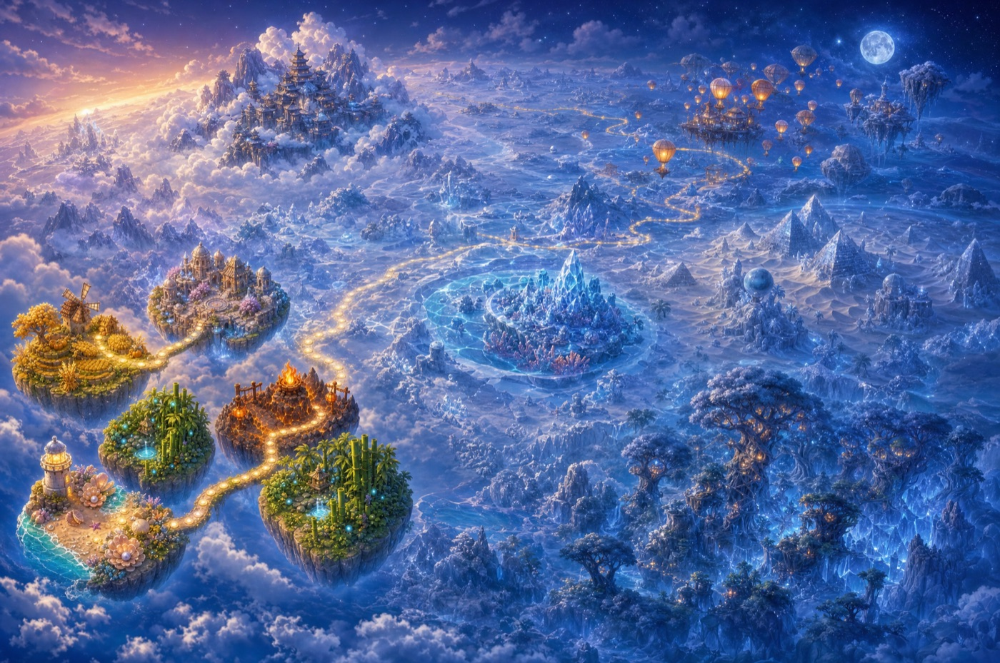
Planned, except what is marked today. The five realms, Omni, fusions and the Freed Book are playable on the web now. A $100K raise funds the first season; a season about every ten weeks comes with the seed round.
Two players. One said: "I can't just leave right now."
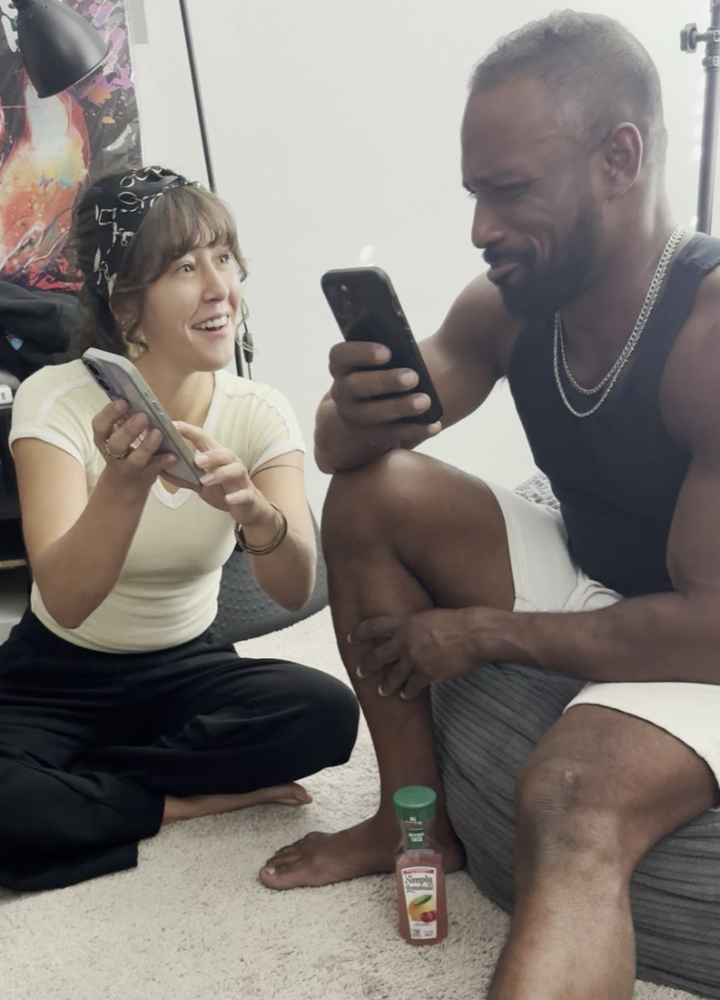
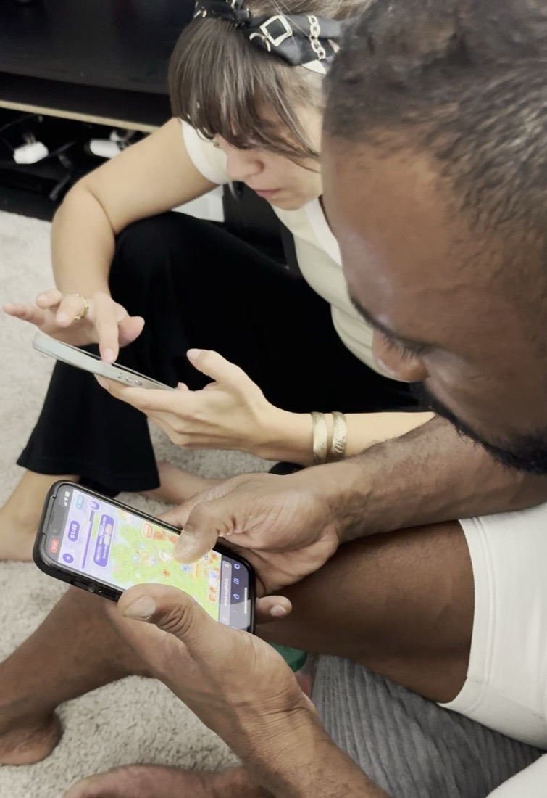
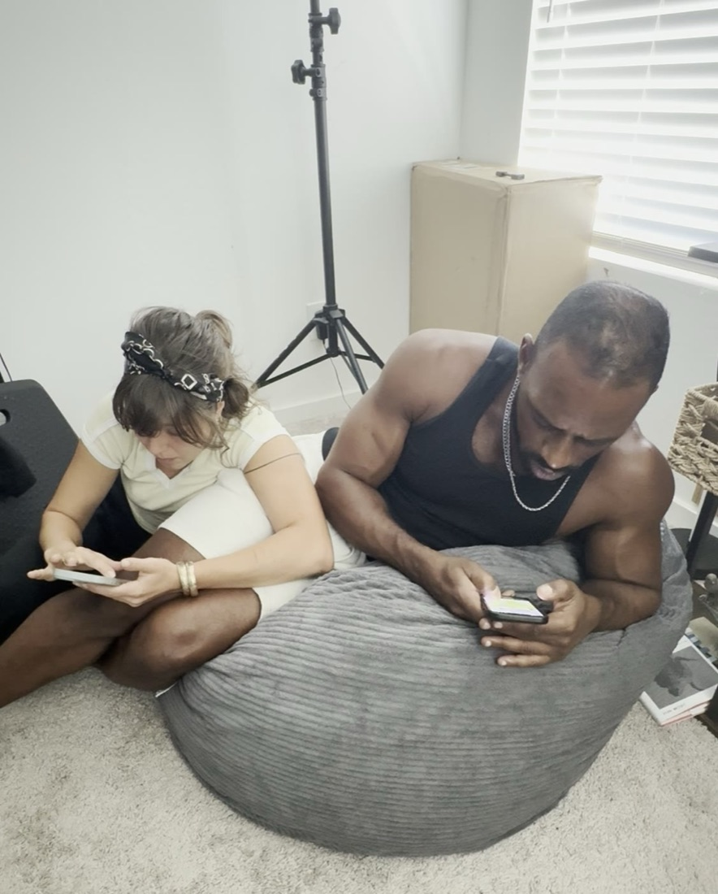
"I was so into this, my leg fell asleep … I can't just leave right now."
Said during Playtest Two
- ↑Abby got better fastBetween two sessions an hour apart, on an updated build, her Level 2 went from 3 falls and 1 ultimate to 0 falls and 3 ultimates. Sixteen minutes heads-down in session two.
- ✓Demaris: "Still challenging, but I can get out in the ways that I should."An experienced player, and a co-founder, so we count his word as feedback, not proof.
Abby had never played this kind of game. Two players are a story, not data. This round buys the data.
A proven genre, a family audience, and a gap for trust.
Free to play. Fair to pay. Safe by design.
Free to play, with every story chapter free. A new season arrives about every ten weeks with a free story track and a Season Path of outfits, looks and that season's spirit animal. Nothing you can buy gives a stat advantage.
| Season Path, the premium reward track | $5.99 |
| Path+, with the season's hero on day one | $9.99 |
| Extra spirit animal, also earnable in about two months | $5.99 |
| Looks for powers and animals, no added power | $1.99–$3.99 |
| Second chance, reopens an unfinished Path | $0.99 |
- ✓A grown-up gate on every purchaseNothing is bought without a parent.
- ✓No ads, no open chat, no typed namesData practices built for US children's privacy law (COPPA) from day one.
- !Why it mattersEpic Games agreed to pay $520M in 2022, including a record $275M COPPA penalty [10]. Stricter COPPA rules took effect in April 2026 [11].
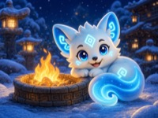
Tier 1Story chapterFree- Tier 10Keeper lookPath
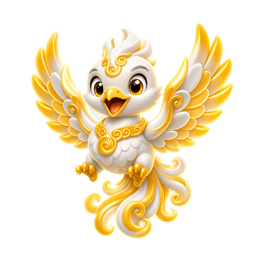
Tier 25Season spirit animalPath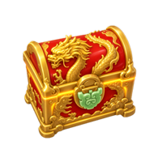
Tier 35Gems and upgradesFree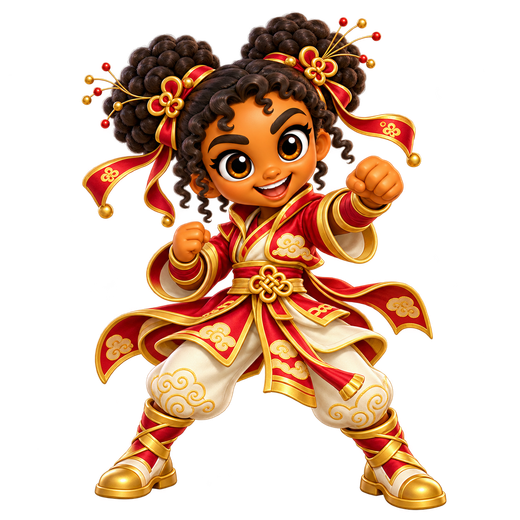
Tier 50Season hero outfitPath
From five playable levels to a game families come back to.
Later, play together. Each family member brings an element, and the hardest bosses fall only to a team in balance. The game's lesson becomes its multiplayer.
Two founders, one playable game.
It started with Qigong. Filming Demaris's masterclasses, Amos also saw him at home, as a father, and was struck by his kids: calm, sharp and able to name what they felt. Two lifelong gamers asked if a game could carry some of that practice to every child. MorQi began as a kids' app and became a game for everyone, kids and grown-ups alike, that teaches without teaching.
Everything in this bible was built by DP Media's founders with an AI-assisted pipeline: five levels, seven Keepers, twelve spirit animals, fifteen creatures and an original score. The founders work without salary, so every dollar of this round goes into the game.
$60K to put MorQi in families' hands.
What it proves: day-1, day-7 and day-30 retention from real families, how much play goes to the lessons and, at $100K, whether parents buy the Season Path. For scale, Nurture raised a $2.8M pre-seed in 2024 for empathy play [12].
PDFs: this bible · the one-pager
| Native iPhone build: a contract game developer for about five months | $30,000 |
| Art, animation and effects: our pipeline plus a contract artist | $9,000 |
| Legal: company and IP assignment, COPPA and App Store family rules | $6,000 |
| Soft-launch test marketing in one or two markets | $6,000 |
| Music and sound | $3,000 |
| Tools: Apple developer account, cloud and art credits | $3,000 |
| Contingency, about 5% | $3,000 |
| Total at $60K | $60,000 |
[1] CDC, children's mental health data, 2023–24. [2] WHO, adolescent mental health fact sheet, 1 Sep 2025. [3] ESA Essential Facts 2026, as reported by Outlook Respawn, 4 Jun 2026. [4] ESA Essential Facts 2026, YouGov, 13,545 people. [5] Newzoo via PocketGamer.biz, 19 Jun 2026. [6] VGC, 22 Apr 2026. [7] Sensor Tower via WN Hub, Aug 2022–Apr 2024. [8] MarketsandMarkets, analyst forecast for 2026–2032. [9] Lingokids, Sep 2025. [10] FTC, Dec 2022. [11] Amended FTC COPPA Rule, compliance from 22 Apr 2026. [12] Seedcamp, Sep 2024. Games named appear only inside cited market data.